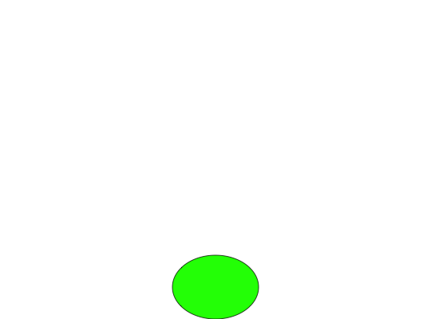

Plots the symbol or logo for dot punctuation
dotletter(plot = FALSE, colfill = "green", y_pos = 0.1, x_pos = 0.5,
rad = 0.1)
Arguments
- plot
- A binary. If FALSE, only outputs grid co-ordinates for the logo,
along with color labels. If TRUE, also plots the logo in a new grid
window. Defaults to FALSE.
- colfill
- The color used to highlight the symbol. Defaults to "green".
- y_pos
- The y-position of the center of the dot in [0,1] X [0,1] window.
Defaults to 0.1.
- x_pos
- The x-postition of the center of the dot in [0,1] X [0,1] window.
Defaults to 0.5.
- rad
- The radius of the dot. Defaults to 0.1.
Value
Returns a list with the following items.
Examples
out <- dotletter(plot=TRUE)
